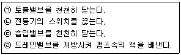

가스산업기사 (2016-03-06 기출문제)
1과목: 연소공학
1. 메탄 80v%, 프로판 5v%, 에탄 15v%인 혼합가스의 공기 중 폭발하한계는 약 얼마인가?
- 2.1%
- 3.3%
- 4.3%
- 5.1%
(정답률: 71%)

2. 1Sm3의 합성가스 중의 CO와 H2의 몰비가 1 : 1일 때 연소에 필요한 이론 공기량은 약 몇 Sm3/Sm3인가?
- 0.50
- 1.00
- 2.38
- 4.76
(정답률: 61%)
3. 다음 중 이론연소온도(화염온도, t℃)를 구하는 식은? (단, Hh : 고발열량, HL : 저발열량, G : 연소가스량, Cp : 비열이다.)
- t = HL/(G·Cp)
- t = Hh/(G·Cp)
- t = (G·Cp)/HL
- t = (G·Cp)/Hh
(정답률: 68%)
4. 고온체의 색깔과 온도를 나타낸 것 중 옳은 것은?
- 적색 : 1500℃
- 휘백색 : 1300℃
- 황적색 : 1100℃
- 백적색 : 850℃
(정답률: 71%)
5. 가연성 물질을 공기로 연소시키는 경우 공기 중의 산소농도를 높게 하면 어떻게 되는가?
- 연소속도는 빠르게 되고, 발화온도는 높게 된다.
- 연소속도는 빠르게 되고, 발화온도는 낮게 된다.
- 연소속도는 느리게 되고, 발화온도는 높게 된다.
- 연소속도는 느리게 되고, 발화온도는 낮게 된다.
(정답률: 87%)
6. 공기 중에서 가스가 정상연소 할 때 속도는?
- 0.03 ~ 10m/s
- 11 ~ 20m/s
- 21 ~ 30m/s
- 31~40m/s
(정답률: 80%)
7. 폭굉을 일으킬 수 있는 기체가 파이프 내에 있을 때 폭굉 방지 및 방호에 대한 설명으로 옳지 않은 것은?
- 파이프라인에 오리피스 같은 장애물이 없도록 한다.
- 공정 라인에서 회전이 가능하면 가급적 원만한 회전을 이루도록 한다.
- 파이프의 지름대 길이의 비는 가급적 작게 한다.
- 파이프라인에 장애물이 있는 곳은 관경을 축소한다.
(정답률: 85%)
8. 연소속도에 대한 설명 중 옳지 않은 것은?
- 공기의 산소분압을 높이면 연소속도는 빨라진다.
- 단위면적의 화염면이 단위시간에 소비하는 미연소혼합기의 체적이라 할 수 있다.
- 미연소혼합기의 온도를 높이면 연소속도는 증가한다.
- 일산화탄소 및 수소 기타 탄화수소계 연료는 당량비가 1.1 부근에서 연소속도의 피크가 나타난다.
(정답률: 69%)
9. 점화원이 될 우려가 있는 부분을 용기 안에 넣고 불활성 가스를 용기 안에 채워 넣어 폭발성가스가 침입하는 것을 방지한 방폭구조는?
- 압력방폭구조
- 안전증방폭구조
- 유입방폭구조
- 본질방폭구조
(정답률: 75%)
10. “착화온도가 85℃이다.” 를 가장 잘 설명한 것은?
- 85℃ 이하로 가열하면 인화한다.
- 85℃ 이하로 가열하고 점화원이 있으면 연소한다.
- 85℃로 가열하면 공기 중에서 스스로 발화한다.
- 85℃로 가열해서 점화원이 있으면 연소한다.
(정답률: 81%)
11. 화재와 폭발을 구별하기 위한 주된 차이점은?
- 에너지방출속도
- 점화원
- 인화점
- 연소한계
(정답률: 89%)
12. 용기내의 초기 산소농도를 설정치 이하로 감소시키도록 하는데 이용되는 퍼지방법이 아닌 것은?
- 진공퍼지
- 온도퍼지
- 스위프퍼지
- 사이폰퍼지
(정답률: 75%)
13. 최소 점화에너지에 대한 설명으로 옳지 않은 것은?
- 연소속도가 클수록, 열전도도가 작을수록 큰 값을 갖는다.
- 가연성 혼합기체를 점화시키는데 필요한 최소 에너지를 최소 점화에너지라 한다.
- 불꽃 방전 시 일어나는 점화에너지의 크기는 전압의 제곱에 비례한다.
- 일반적으로 산소농도가 높을수록, 압력이 증가할수록 값이 감소한다.
(정답률: 63%)
14. 다음 중 불연성 물질이 아닌 것은?
- 주기율표의 0족 원소
- 산화반응 시 흡열반응을 하는 물질
- 완전연소한 산화물
- 발열량이 크고 계의 온도 상승이 큰 물질
(정답률: 66%)
15. 다음 중 가연물의 구비조건 이 아닌 것은?
- 연소열량이 커야 한다.
- 열전도도가 작아야 된다.
- 활성화에너지가 커야 한다.
- 산소와의 친화력이 좋아야 한다.
(정답률: 75%)
16. 아세틸렌(C2H2)의 완전연소반응식은?
- C2H2＋O2 → CO2＋H2O
- 2C2H2＋O2 → 4CO2＋H2O
- C2H2＋5O2 → CO2＋2H2O
- 2C2H2＋5O2 → 4CO2＋2H2O
(정답률: 83%)
17. LPG를 연료로 사용할 때의 장점으로 옳지 않은 것은?
- 발열량이 크다.
- 조성이 일정하다.
- 특별한 가압장치가 필요하다.
- 용기, 조정기와 같은 공급설비가 필요하다.
(정답률: 83%)
18. 2kg의 기체를 0.15MPa, 15℃에서 체적이 0.1m3가 될 때까지 등온압축 할 때 압축 후 압력은 약 몇 MPa인가? (단, 비열은 각각 Cp=0.8, Cv=0.6kJ/kg·K)
- 1.10
- 1.15
- 1.20
- 1.25
(정답률: 53%)
19. 아세틸렌가스의 위험도(H)는 약 얼마인가?
- 21
- 23
- 31
- 33
(정답률: 81%)
20. 기체연료의 주된 연소형태는?
- 확산연소
- 증발연소
- 분해연소
- 표면연소
(정답률: 88%)
2과목: 가스설비
21. 도시가스 원료의 접촉분해공정에서 반응온도가 상승하면 일어나는 현상으로 옳은 것은?
- CH4, CO가 많고 CO2, H2가 적은 가스 생성
- CH4, CO2가 적고 CO, H2가 많은 가스 생성
- CH4, H2가 많고 CO2, CO가 적은 가스 생성
- CH4, H2가 적고 CO2, CO가 많은 가스 생성
(정답률: 69%)
22. 2단 감압식 2차용 저압조정기의 출구 쪽 기밀시험 압력은?
- 3.3kPa
- 5.5kPa
- 8.4kPa
- 10.0kPa
(정답률: 52%)
23. 지하 정압실 통풍구조를 설치할 수 없는 경우 적합한 기계환기 설비기준으로 맞지 않는 것은?
- 통풍능력이 바닥면적 1m2마다 0.5m3/분 이상으로 한다.
- 배기구는 바닥면(공기보다 가벼운 경우는 천장면) 가까이 설치한다.
- 배기가스 방출구는 지면에서 5m 이상 높게 설치한다.
- 공기보다 비중이 가벼운 경우에는 배기가스 방출구는 5m 이상 높게 설치한다.
(정답률: 53%)
24. 유체에 대한 저항은 크나 개폐가 쉽고 유량조절에 주로 사용되는 밸브는?
- 글로브 밸브
- 게이트 밸브
- 플러그 밸브
- 버터플라이 밸브
(정답률: 76%)
25. 기화기에 의해 기화된 LPG에 공기를 혼합하는 목적으로 가장 거리가 먼 것은?
- 발열량 조절
- 재액화 방지
- 압력 조절
- 연소효율 증대
(정답률: 59%)
26. 다음 중 동 및 동합금을 장치의 재료로 사용할 수 있는 것은?
- 암모니아
- 아세틸렌
- 황화수소
- 아르곤
(정답률: 73%)
27. 고온·고압에서 수소를 사용하는 장치는 일반적으로 어떤 재료를 사용하는가?
- 탄소강
- 크롬강
- 조강
- 실리콘강
(정답률: 75%)
28. 다음 보기는 터보펌프의 정지 시 조치사항이다. 정지 시의 작업순서가 올바르게 된 것은?

- ㉠ - ㉡ - ㉢ - ㉣
- ㉠ - ㉡ - ㉣ - ㉢
- ㉡ - ㉠ - ㉢ - ㉣
- ㉡ - ㉠ - ㉣ - ㉢
(정답률: 68%)
29. 다음 중 가스홀더의 기능이 아닌 것은?
- 가스수요의 시간적 변화에 따라 제조가 따르지 못할 때 가스의 공급 및 저장
- 정전, 배관공사 등에 의한 제조 및 공급설비의 일시적 중단 시 공급
- 조성의 변동이 있는 제조가스를 받아들여 공급가스의 성분, 열량, 연소성 등의 균일화
- 공기를 주입하여 발열량이 큰 가스로 혼합공급
(정답률: 73%)
30. 원유, 나프타 등의 분자량이 큰 탄화수소를 원료로 하고 고온에서 분해하여 고열량의 가스를 제조하는 공정은?
- 열분해공정
- 접촉분해공정
- 부분연소공정
- 수소화분해공정
(정답률: 82%)
31. 분젠식 버너의 특징에 대한 설명 중 틀린 것은?
- 고온을 얻기 쉽다.
- 역화의 우려가 없다.
- 버너가 연소가스량에 비하여 크다.
- 1차 공기와 2차 공기 모두를 사용한다.
(정답률: 69%)
32. 배관재료의 허용응력(S)이 8.4kg/mm2이고 스케줄 번호가 80일 때 최고 사용압력 P[kg/cm2]는?(오류 신고가 접수된 문제입니다. 반드시 정답과 해설을 확인하시기 바랍니다.)
- 67
- 1⑤
- 210
- 650
(정답률: 51%)
33. 공기 액화장치 중 수소, 헬륨을 냉매로 하며 2개의 피스톤이 한 실린더에 설치되어 팽창기와 압축기의 역할을 동시에 하는 형식은?
- 캐스케이드식
- 캐피자식
- 클라우드식
- 필립스식
(정답률: 72%)
34. 고압가스 일반제조시설에서 저장탱크를 지하에 묻는 경우의 기준으로 틀린 것은?
- 저장탱크 정상부와 지면과의 거리는 60㎝ 이상으로 할 것
- 저장탱크의 주위에 마른 흙을 채울 것
- 저장탱크를 2개 이상 인접하여 설치하는 경우 상호간에 1m 이상의 거리를 유지할 것
- 저장탱크를 묻는 곳의 주위에는 지상에 경계를 표지를 할 것
(정답률: 82%)
35. 강을 연하게 하여 기계가공성을 좋게 하거나, 내부응력을 제거하는 목적으로 적당한 온도까지 가열한 다음 그 온도를 유지한 후에 서냉하는 열처리 방법은?
- Marquenching
- Quenching
- Tempering
- Annealing
(정답률: 74%)
36. 집단공급시설에서 입상관이란?
- 수용가에 가스를 공급하기 위해 건축물에 수직으로 부착되어 있는 배관을 말하며 가스의 흐름방향이 공급자에서 수양가로 연결된 것을 말한다.
- 수용가에 가스를 공급하기 위해 건축물에 수평으로 부착되어 있는 배관을 말하며 가스의 흐름방향이 공급자에서 수양가로 연결된 것을 말한다.
- 수용가에 가스를 공급하기 위해 건축물에 수직으로 부착되어 있는 배관을 말하며 가스의 흐름방향과 관계없이 수직배관은 입상관으로 본다.
- 수용가에 가스를 공급하기 위해 건축물에 수평으로 부착되어 있는 배관을 말하며 가스의 흐름방향과 관계없이 수직배관은 입상관으로 본다.
(정답률: 74%)
37. 펌프에서 일반적으로 발생하는 현상이 아닌 것은?
- 서징(Surging)현상
- 시일링(Sealing)현상
- 캐비테이션(공동)현상
- 수격(water hammering)작용
(정답률: 82%)
38. 직경 100㎜, 행정 150㎜, 회전수 600rpm, 체적효율이 0.8인 2기통 왕복압축기의 송출량은 약 몇 m3/min인가?
- 0.57
- 0.84
- 1.13
- 1.54
(정답률: 57%)
39. 액화염소가스 68kg를 용기에 충전하려면 용기의 내용적은 약 몇 L가 되어야 하는가? (단, 연소가스의 정수 C는 0.8이다.)
- 54.4
- 68
- 71.4
- 75
(정답률: 73%)
40. 가스액화분리장치 구성기기 중 터보 팽창기의 특징에 대한 설명으로 틀린 것은?
- 팽창비는 약 2 정도이다.
- 처리가스량은 10000m3/h 정도이다.
- 회전수는 10000 ~ 20000rpm 정도이다.
- 처리가스에 윤활유가 혼입되지 않는다.
(정답률: 71%)
3과목: 가스안전관리
41. 산소 중에서 물질의 연소성 및 폭발성에 대한 설명으로 틀린 것은?
- 기름이나 그리스 같은 가연성 물질은 발화시에 산소 중에서 거의 폭발적으로 반응한다.
- 산소농도나 산소분압이 높아질수록 물질의 발화온도는 높아진다.
- 폭발한계 및 폭굉한계는 공기 중과 비교할 때 산소 중에서 현저하게 넓어진다.
- 산소 중에서는 물질의 점화에너지가 낮아진다.
(정답률: 69%)
42. 액화석유가스 판매사업소 및 영업소 용기저장소의 시설기준 중 틀린 것은?
- 용기보관소와 사무실은 동일 부지 내에 설치하지 않을 것
- 판매업소의 용기 보관실 벽은 방호벽으로 할 것
- 가스누출경보기는 용기보관실에 설치하되 분리형으로 설치할 것
- 용기보관실은 불연성 재료를 사용한 가벼운 지붕으로 할 것
(정답률: 67%)
43. 정전기 제거 또는 발생방지 조치에 대한 설명으로 틀린 것은?
- 상대습도를 높인다.
- 공기를 이온화 시킨다.
- 대상물을 접지 시킨다.
- 전기저항을 증가시킨다.
(정답률: 81%)
44. 가연성가스 및 독성가스 용기의 도색 및 문자표시의 색상으로 틀린 것은?
- 수소 - 주황색으로 용기도색, 백색으로 문자표기
- 아세틸렌 - 황색으로 용기도색, 흑색으로 문자표기
- 액화암모니아 - 백색으로 용기도색, 흑색으로 문자표기
- 액화염소 - 회색으로 용기도색, 백색으로 문자표기
(정답률: 84%)
45. 고압가스 용기의 재검사를 받아야 할 경우가 아닌 것은?
- 손상의 발생
- 합격표시의 훼손
- 충전한 고압가스의 소진
- 산업통상자원부령이 정하는 기간의 경과
(정답률: 81%)
46. 도시가스사업이 허가된 지역에서 도로를 굴착하고자 하는 자는 가스안전영향평가를 하여야 한다. 이때 가스안전영향평가를 하여야 하는 굴착공사가 아닌 것은?
- 지하보도 공사
- 지하차도 공사
- 광역상수도 공사
- 도시철도 공사
(정답률: 76%)
47. 합격용기 각인사항의 기호 중 용기의 내압시험압력을 표시하는 기호는?
- TP
- TW
- TV
- FP
(정답률: 90%)
48. 전기방식전류가 흐르는 상태에서 토양 중에 매설되어 있는 도시가스 배관의 방식전위는 포화황산동 기준전극으로 몇 V 이하이어야 하는가?
- -0.75
- -0.85
- -1.2
- -1.5
(정답률: 81%)
49. 용기에 의한 액화석유가스 저장소에서 액화석유가스 저장설비 및 가스설비는 그 외면으로부터 화기를 취급 하는 장소까지 최소 몇 m 이상의 우회거리를 두어야 하는가?
- 3
- 5
- 8
- 10
(정답률: 66%)
50. 고압가스 운반 등의 기준에 대한 설명으로 옳은 것은?
- 염소와 아세틸렌, 암모니아 또는 수소는 동일차량에 혼합 적재할 수 있다.
- 가연성가스와 산소는 충전용기의 밸브가 서로 마주 보게 적재할 수 있다.
- 충전용기와 경유는 동일차량에 적재하여 운반할 수 있다.
- 가연성가스 또는 산소를 운반하는 차량에는 소화설비 및 응급조치에 필요한 자재 및 공구를 휴대한다.
(정답률: 85%)
51. LPG 압력조정기 중 1단감압식 저압조정기의 용량이 얼마 미만에 대하여 조정기의 몸통과 덮개를 일반공구(몽키렌치, 드라이버 등)로 분리할 수 없는 구조로 하여야 하는가?
- 5kg/h
- 10kg/h
- 100kg/h
- 300kg/h
(정답률: 62%)
52. 액화가스를 충전하는 탱크의 내부에 액면의 요동을 방지하기 위하여 설치하는 장치는?
- 방호벽
- 방파판
- 방해판
- 방지판
(정답률: 88%)
53. 가스의 분류에 대하여 바르지 않게 나타낸 것은?
- 가연성가스 : 폭발범위 하한이 10% 이하이거나, 상한과 하한의 차가 20% 이상인 가스
- 독성가스 : 공기 중에 일정량 이상 존재하는 경우 인체에 유해한 독성을 가진 가스
- 불연성가스 : 반응을 하지 않는 가스
- 조연성가스 : 연소를 도와주는 가스
(정답률: 74%)
54. 독성가스 용기 운반차량 운행 후 조치사항에 대한 설명으로 틀린 것은?
- 충전용기를 적재한 차량은 제1종 보호시설에서 15m 이상 떨어진 장소에 주정차 한다.
- 충전용기를 적재한 차량은 제2종 보호시설에서 10m 이상 떨어진 장소에 주정차 한다.
- 주정차장소 선정은 지형을 고려하여 교통량이 적은 안전한 장소를 택한다.
- 차량의 고장 등으로 인하여 정차하는 경우는 적색 표지판 등을 설치하여 다른 차량과의 충돌을 피하기 위한 조치를 한다.
(정답률: 69%)
55. 고압가스제조시설은 안전거리를 유지해야 한다. 안전거리를 결정하는 요인이 아닌 것은?
- 가스사용량
- 가스저장능력
- 저장하는 가스의 종류
- 안전거리를 유지해야 할 건축물의 종류
(정답률: 73%)
56. 고압가스 장치의 운전을 정리하고 수리할 때 유의할 사항으로 가장 거리가 먼 것은?
- 가스의 치환
- 안전밸브의 작동
- 배관의 차단확인
- 장치 내 가스분석
(정답률: 73%)
57. 아세틸렌 용기에 충전하는 다공물질의 다공도 값은?
- 62~75%
- 72~85%
- 75~92%
- 82~95%
(정답률: 84%)
58. 도시가스용 압력조정기란 도시가스 정압기 이외에 설치되는 압력조정기로서 입구 쪽 호칭지름과 최대 표시 유량을 각각 바르게 나타낸 것은?
- 50A 이하, 300Nm3/h 이하
- 80A 이하, 300Nm3/h 이하
- 80A 이하, 500Nm3/h 이하
- 100A 이하, 500Nm3/h 이하
(정답률: 75%)
59. 전기기기의 내압방폭구조의 선택은 가연성가스의 무엇에 의해 주로 좌우되는가?
- 인화점, 폭굉한계
- 폭발한계, 폭발등급
- 최대안전틈새, 발화온도
- 발화도, 최소발화에너지
(정답률: 87%)
60. HCN은 충전한 후 며칠이 경과하기 전에 다른 용기에 옮겨 충전하여야 하는가?
- 30일
- 60일
- 90일
- 120일
(정답률: 85%)
4과목: 가스계측
61. 막식가스미터에서 크랭크축이 녹슬거나, 날개 등의 납땜이 떨어지는 등 회전장치 부분에 고장이 생겨 가스가 미터기를 통과하지 않는 고장의 형태는?
- 부동
- 불통
- 누설
- 감도불량
(정답률: 75%)
62. 수소염이온화식 가스검지기에 대한 설명으로 옳지 않은 것은?
- 검지성분은 탄화수소에 한한다.
- 탄화수소의 상대감도는 탄소 수에 반비례한다.
- 검지감도가 다른 감지기에 비하여 아주 높다.
- 수소 불꽃 속에 시료가 들어가면 전기전도도가 증대 하는 현상을 이용한 것이다.
(정답률: 62%)
63. 현재 산업체와 연구실에서 사용하는 가스크로마토그래피의 각 피크(Peak)면적 측정법으로 주로 이용되는 방식은?
- 중량을 이용하는 방법
- 면적계를 이용하는 방법
- 적분계(integrator)에 의한 방법
- 각 기체의 길이를 총량한 값에 의한 방법
(정답률: 70%)
64. 2원자 분자를 제외한 대부분의 가스가 고유한 흡수스펙트럼을 가지는 것을 응용한 것으로 대기오염 측정에 사용되는 가스분석기는?
- 적외선 가스분석기
- 가스크로마토그래피
- 자동화학식 가스분석기
- 용액흡수도전율식 가스분석기
(정답률: 66%)
65. 내경 50㎜인 배관으로 비중이 0.98인 액체가 분당 1m3의 유량으로 흐르고 있을 때 레이놀즈수는 약 얼마인가? (단, 유체의 점도는 0.⑤kg/m·s이다.)
- 11210
- 8320
- 3230
- 2210
(정답률: 57%)
66. 가스계량기 중 추량식이 아닌 것은?
- 오리피스식
- 벤투리식
- 터빈식
- 루트식
(정답률: 63%)
67. 가스성분과 그 분석 방법으로 가장 옳은 것은?
- 수분 : 노점법
- 전유황 : 요오드적정법
- 나프탈렌 : 중화적정법
- 암모니아 : 가스크로마토그래피법
(정답률: 64%)
68. 액주식 압력계의 종류가 아닌 것은?
- U자관
- 단관식
- 경사관식
- 단종식
(정답률: 68%)
69. 같은 무게와 내용적의 빈 실린더에 가스를 충전하였다. 다음 중 가장 무거운 것은?
- 5기압, 300K의 질소
- 10기압, 300K의 질소
- 10기압, 360K의 질소
- 10기압, 300K의 헬륨
(정답률: 66%)
70. 가스검지법 중 아세틸렌에 대한 염화제1구리착염지의 반응색은?
- 청색
- 적색
- 흑색
- 황색
(정답률: 74%)
71. 가스미터의 필요조건이 아닌 것은?
- 구조가 간단할 것
- 감도가 좋을 것
- 대형으로 용량이 클 것
- 유지관리가 용이할 것
(정답률: 87%)
72. 오차에 비례한 제어 출력 신호를 발생시키며 공기식 제어기의 경우에는 압력 등을 제어 출력신호로 이용하는 제어기는?
- 비례제어기
- 비례적분제어기
- 비례미분제어기
- 비례적분 - 미분제어기
(정답률: 57%)
73. 전기식 제어방식의 장점에 대한 설명으로 틀린 것은?
- 배선작업이 용이하다.
- 신호전달 지연이 없다.
- 신호의 복잡한 취급이 쉽다.
- 조작속도가 빠른 비례 조작부를 만들기 쉽다.
(정답률: 68%)
74. 수면에서 20m깊이에 있는 지점에서의 게이지압이 3.16kgf/cm2 이었다. 이 액체의 비중량은?
- 1580kgf/m3
- 1850kgf/m3
- 15800kgf/m3
- 18500kgf/m3
(정답률: 43%)
75. 미리 알고 있는 측정량과 측정치를 평형시켜 알고 있는 양의 크기로부터 측정량을 알아내는 방법으로 대표 적인 예로서 천칭을 이용하여 질량을 측정하는 방식을 무엇이라 하는가?
- 영위법
- 평형법
- 방위법
- 편위법
(정답률: 62%)
76. 습증기의 열량을 측정하는 기구가 아닌 것은?
- 조리개 열량계
- 분리 열량계
- 과열 열량계
- 봄베 열량계
(정답률: 81%)
77. 계측기의 원리에 대한 설명으로 가장 거리가 먼 것은?
- 기전력의 차이로 온도를 측정한다.
- 액주높이로 부터 압력을 측정한다.
- 초음파 속도 변화로 유량을 측정한다.
- 정전용량을 이용하여 유속을 측정한다.
(정답률: 64%)
78. 가스분석 중 화학적 방법이 아닌 것은?
- 연소열을 이용한 방법
- 고체흡수제를 이용한 방법
- 용액흡수제를 이용한 방법
- 가스밀도, 점성을 이용한 방법
(정답률: 70%)
79. 400m 길이의 저압본관에 시간당 200m3 가스를 흐르도록 하려면 가스배관의 관경은 약 몇 ㎝가 되어야 하는가? (단, 기점, 종점간의 압력강하를 1.47mmHg, K값=0.707이고, 가스비중을 0.64로 한다.)
- 12.45㎝
- 15.93㎝
- 17.23㎝
- 21.34㎝
(정답률: 48%)
80. 검사절차를 자동화하려는 계측작업에서 반드시 필요한 장치가 아닌 것은?
- 자동가공장치
- 자동급송장치
- 자동선별장치
- 자동검사장치
(정답률: 69%)